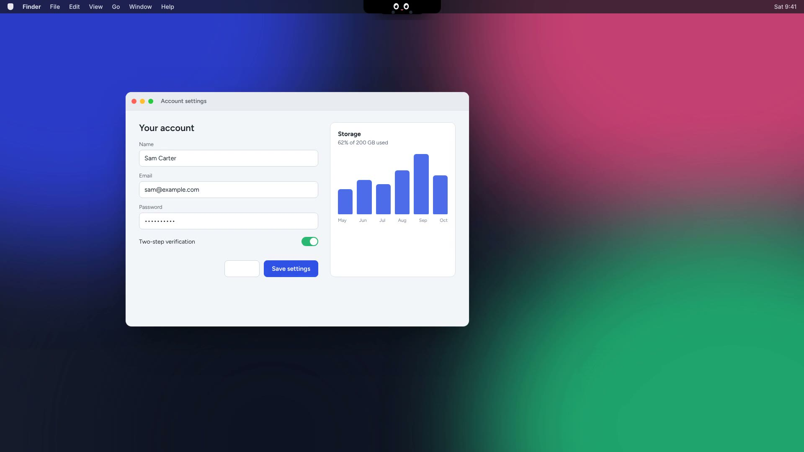
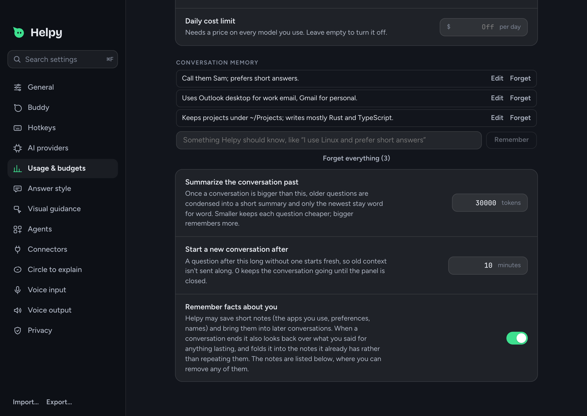
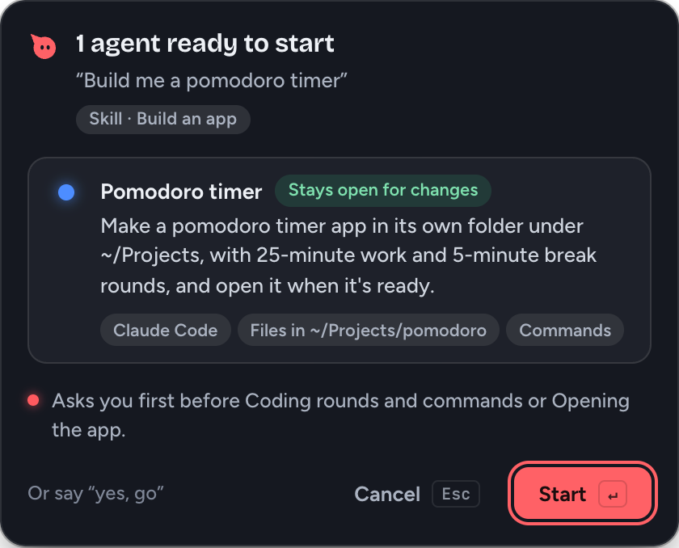
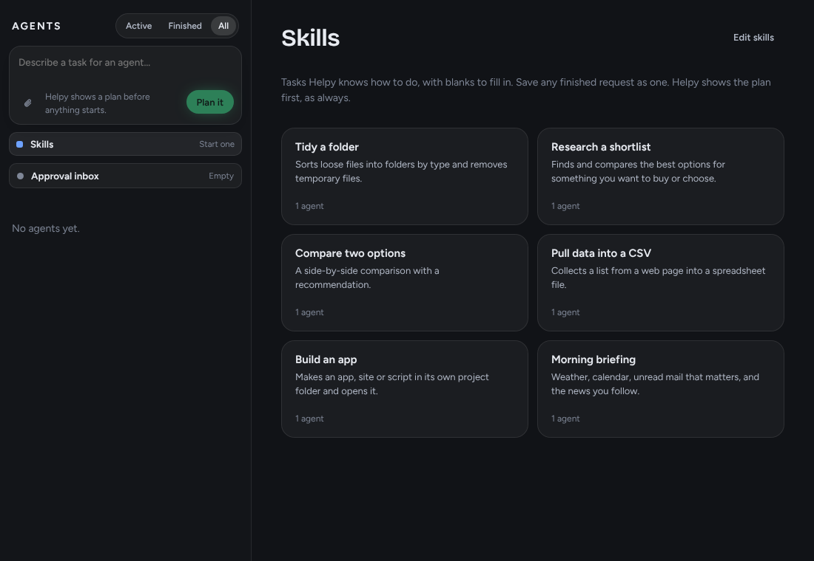

Circle to explain
The screen freezes. Draw around anything and Helpy explains it, labels the parts, copies the text or translates it.
Ask out loud. Helpy points at the real button, draws on your apps, and runs agents for you.

How it helps
Pick one in Settings, or here. The whole page follows your choice.
A small friend that rides along with your pointer, so help is always where you're already looking.
Out of sight until you need it. Hover the notch, or just ask, and the island opens to talk.
Background agents
Agents plan, browse, fill in forms and save files while you keep working. They always ask first.
Nemotron Ultra turns one sentence into agents. Nothing starts until you press Start.
Searching with Tavily and driving a real browser, while a copy of Pip waits in the dock.
Typing into a site, sending, deleting: all of it waits for your OK.
A table, the CSV it saved, next steps, and every file change undoable in one click.
The agent panel shows each run with its timeline, tokens and cost.
Everything waiting for you, across agents, editable before you approve.
The screen freezes. Draw around anything and Helpy explains it, labels the parts, copies the text or translates it.
Shapes, labels, formulas, a reference picture and a chart, drawn over the real app.

Short notes, merged so nothing repeats. Edit or forget any.

"Build me a pomodoro timer" makes it in its own folder and opens it.

Save a request as a skill. Run it every weekday at 8, in 20 minutes, or when files land in a folder.
Gmail, Calendar, Notion, Slack, GitHub and any MCP server.
Password managers and fields are blanked. Spending limits live in Rust, and every file change can be undone.
Bring your own model
Keys stay in your system keychain. Offline mode keeps everything on your computer.
Download
Free for macOS, Windows and Linux. Installers are on the Releases page.
Macs with Apple Silicon (M1 or later). Open the .dmg and drag Helpy into Applications.
Download .dmgFirst launch: the build isn't signed, so macOS says it can't verify Helpy. Open it once, then click Open Anyway in System Settings → Privacy & Security. If macOS says the app is damaged, run this in Terminal:
xattr -dr com.apple.quarantine /Applications/Helpy.appWindows 10 or 11, 64-bit. Run the installer.
Download .exeFirst launch: the build isn't signed, so SmartScreen may warn you. Click More info → Run anyway.
64-bit, X11 (Wayland is best effort). Make the AppImage executable and run it.
Download .AppImagePrefer a package? The .deb and .rpm are on the release page.
Intel Mac, or no build for your computer? Build it from source. Older versions are under all releases.
MIT licensed. Built with Tauri, Rust and React for macOS, Windows and Linux.